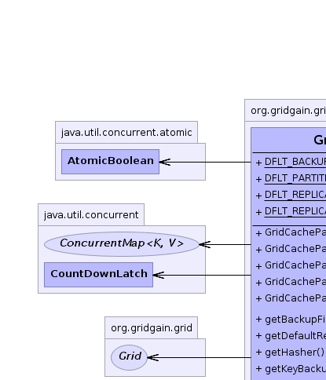
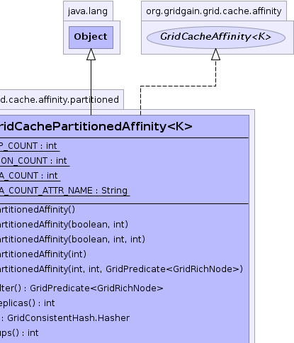
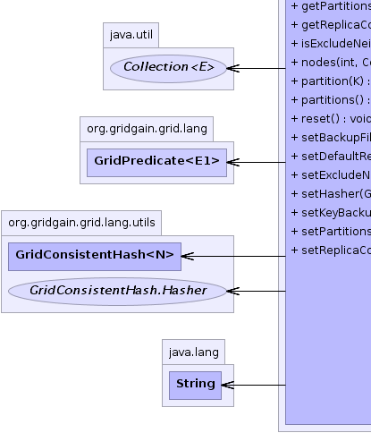
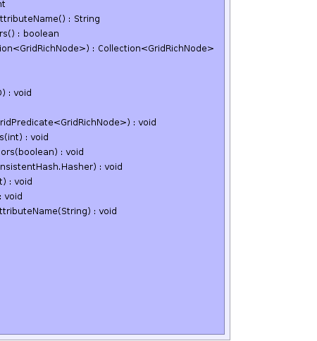

org.gridgain.grid.cache.affinity.partitioned.GridCachePartitionedAffinity<K>
org.gridgain.grid.cache.affinity.partitioned.GridCachePartitionedAffinity<K>
|
GridGain™ 4.0.3c
Community Edition |
|||||||||
| PREV CLASS NEXT CLASS | FRAMES NO FRAMES | |||||||||
| SUMMARY: NESTED | FIELD | CONSTR | METHOD | DETAIL: FIELD | CONSTR | METHOD | |||||||||
java.lang.Object
public class GridCachePartitionedAffinity<K>
Affinity function for partitioned cache. This function supports the following configuration:
backups - Use ths flag to control how many back up nodes will be
assigned to every key. The default value is defined by GridCachePartitionedAffinity.DFLT_BACKUP_COUNT.
replicas - Generally the more replicas a node gets, the more key assignments
it will receive. You can configure different number of replicas for a node by
setting user attribute with name GridCachePartitionedAffinity.getReplicaCountAttributeName() to some
number. Default value is 512 defined by GridCachePartitionedAffinity.DFLT_REPLICA_COUNT constant.
backupFilter - Optional filter for back up nodes. If provided, then only
nodes that pass this filter will be selected as backup nodes and only nodes that
don't pass this filter will be selected as primary nodes. If not provided, then
primary and backup nodes will be selected out of all nodes available for this cache.
NOTE: In situations where there are no primary nodes at all, i.e. no nodes for which backup
filter returns false, first backup node for the key will be considered primary.
| Wiki | |
| Forum |
|  |  |
|  |  |
| Field Summary | |
|---|---|
static int |
DFLT_BACKUP_COUNT
Default number of backups. |
static int |
DFLT_PARTITION_COUNT
Default number of partitions. |
static int |
DFLT_REPLICA_COUNT
Default replica count for partitioned caches. |
static String |
DFLT_REPLICA_COUNT_ATTR_NAME
Name of node attribute to specify number of replicas for a node. |
| Constructor Summary | |
|---|---|
GridCachePartitionedAffinity()
Empty constructor with all defaults. |
|
GridCachePartitionedAffinity(boolean exclNeighbors,
int backups)
Initializes affinity with flag to exclude same-host-neighbors from being backups of each other and specified number of backups. |
|
GridCachePartitionedAffinity(boolean exclNeighbors,
int backups,
int parts)
Initializes affinity with flag to exclude same-host-neighbors from being backups of each other, and specified number of backups and partitions. |
|
GridCachePartitionedAffinity(int backups)
Initializes affinity with specified number of backups. |
|
GridCachePartitionedAffinity(int backups,
int parts,
GridPredicate<GridRichNode> backupFilter)
Initializes optional counts for replicas and backups. |
|
| Method Summary | |
|---|---|
GridPredicate<GridRichNode> |
getBackupFilter()
Gets optional backup filter. |
int |
getDefaultReplicas()
Gets default count of virtual replicas in consistent hash ring. |
GridConsistentHash.Hasher |
getHasher()
Gets hasher function for consistent hash. |
int |
getKeyBackups()
Gets count of key backups for redundancy. |
int |
getPartitions()
Gets total number of key partitions. |
String |
getReplicaCountAttributeName()
Gets optional attribute name for replica count. |
boolean |
isExcludeNeighbors()
Checks flag to exclude same-host-neighbors from being backups of each other (default is false). |
Collection<GridRichNode> |
nodes(int part,
Collection<GridRichNode> nodes)
Gets affinity nodes for a partition. |
int |
partition(K key)
Gets partition number for a given key starting from 0. |
int |
partitions()
Gets total number of partitions available. |
void |
removeNode(UUID nodeId)
Removes node from affinity. |
void |
reset()
Resets cache affinity to its initial state. |
void |
setBackupFilter(GridPredicate<GridRichNode> backupFilter)
Sets optional backup filter. |
void |
setDefaultReplicas(int replicas)
Sets default count of virtual replicas in consistent hash ring. |
void |
setExcludeNeighbors(boolean exclNeighbors)
Sets flag to exclude same-host-neighbors from being backups of each other (default is false). |
void |
setHasher(GridConsistentHash.Hasher hasher)
Sets hasher function for consistent hash. |
void |
setKeyBackups(int backups)
Sets count of key backups for redundancy. |
void |
setPartitions(int parts)
Sets total number of partitions. |
void |
setReplicaCountAttributeName(String attrName)
Sets optional attribute name for replica count. |
| Methods inherited from class java.lang.Object |
|---|
clone, equals, finalize, getClass, hashCode, notify, notifyAll, toString, wait, wait, wait |
| Field Detail |
|---|
public static final int DFLT_PARTITION_COUNT
public static final int DFLT_BACKUP_COUNT
public static final int DFLT_REPLICA_COUNT
public static final String DFLT_REPLICA_COUNT_ATTR_NAME
gg:affinity:node:replicas.
| Constructor Detail |
|---|
public GridCachePartitionedAffinity()
public GridCachePartitionedAffinity(int backups)
backups - Number of back up servers per key.
public GridCachePartitionedAffinity(boolean exclNeighbors,
int backups)
Note that excludeNeighbors parameter is ignored if #getBackupFilter() is set.
exclNeighbors - True if nodes residing on the same host may not act as backups
of each other.backups - Number of back up servers per key.
public GridCachePartitionedAffinity(boolean exclNeighbors,
int backups,
int parts)
Note that excludeNeighbors parameter is ignored if #getBackupFilter() is set.
exclNeighbors - True if nodes residing on the same host may not act as backups
of each other.backups - Number of back up servers per key.parts - Total number of partitions.
public GridCachePartitionedAffinity(int backups,
int parts,
@Nullable
GridPredicate<GridRichNode> backupFilter)
Note that excludeNeighbors parameter is ignored if backupFilter is set.
backups - Backups count.parts - Total number of partitions.backupFilter - Optional back up filter for nodes. If provided, then primary nodes
will be selected from all nodes outside of this filter, and backups will be selected
from all nodes inside it.| Method Detail |
|---|
public int getDefaultReplicas()
To determine node replicas, node attribute with GridCachePartitionedAffinity.getReplicaCountAttributeName()
name will be checked first. If it is absent, then this value will be used.
public void setDefaultReplicas(int replicas)
To determine node replicas, node attribute with GridCachePartitionedAffinity.getReplicaCountAttributeName() name
will be checked first. If it is absent, then this value will be used.
replicas - Count of virtual replicas in consistent hash ring.spublic int getKeyBackups()
public void setKeyBackups(int backups)
backups - Key backup count.public int getPartitions()
Note that for fully replicated caches this method should always
return 1.
public void setPartitions(int parts)
parts - Total number of partitions.@Nullable public GridPredicate<GridRichNode> getBackupFilter()
null, then primary nodes will be
selected from all nodes outside of this filter, and backups will be selected
from all nodes inside it.
Note that excludeNeighbors parameter is ignored if backupFilter is set.
public void setBackupFilter(@Nullable
GridPredicate<GridRichNode> backupFilter)
Note that excludeNeighbors parameter is ignored if backupFilter is set.
backupFilter - Optional backup filter.public GridConsistentHash.Hasher getHasher()
public void setHasher(GridConsistentHash.Hasher hasher)
hasher - Hasher function for consistent hash.public String getReplicaCountAttributeName()
GridCachePartitionedAffinity.DFLT_REPLICA_COUNT_ATTR_NAME.
public void setReplicaCountAttributeName(String attrName)
GridCachePartitionedAffinity.DFLT_REPLICA_COUNT_ATTR_NAME.
attrName - User attribute name for replica count for a node.public boolean isExcludeNeighbors()
false).
Note that excludeNeighbors parameter is ignored if #getBackupFilter() is set.
True if nodes residing on the same host may not act as backups of each other.public void setExcludeNeighbors(boolean exclNeighbors)
false).
Note that excludeNeighbors parameter is ignored if #getBackupFilter() is set.
exclNeighbors - True if nodes residing on the same host may not act as backups of each other.public Collection<GridRichNode> nodes(int part, Collection<GridRichNode> nodes)
nodes in interface GridCacheAffinity<K>part - Partition to get nodes for.nodes - Nodes to choose from.
public int partition(K key)
0. Partitioned caches
should make sure that keys are about evenly distributed across all partitions
from 0 to partition count for best performance.
Note that for fully replicated caches it is possible to segment key sets among different grid node groups. In that case each node group should return a unique partition number. However, unlike partitioned cache, mappings of keys to nodes in replicated caches are constant and a node cannot migrate from one partition to another.
partition in interface GridCacheAffinity<K>key - Key to get partition for.
public int partitions()
0 inclusively to
N exclusively without any gaps.
partitions in interface GridCacheAffinity<K>public void reset()
reset in interface GridCacheAffinity<K>public void removeNode(UUID nodeId)
removeNode in interface GridCacheAffinity<K>nodeId -
|
GridGain™ 4.0.3c
Community Edition |
|||||||||
| PREV CLASS NEXT CLASS | FRAMES NO FRAMES | |||||||||
| SUMMARY: NESTED | FIELD | CONSTR | METHOD | DETAIL: FIELD | CONSTR | METHOD | |||||||||
|
GridGain - Real Time Big Data
|
|

|
|